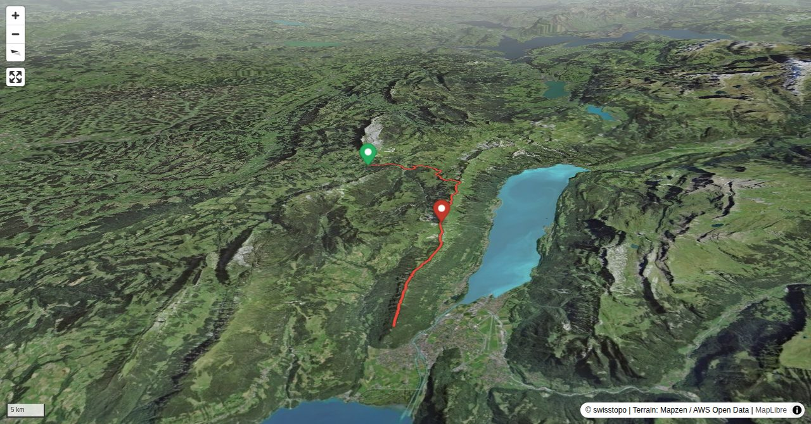

Wenn man den ganzen Brienzergrat überschreiten wollte, wäre das für Normalwandernde mit An- und Abreise ein sehr langes Tageswerk. Der erste Gratabschnitt um das Tannhorn ist für Alpinwandernde am interessantesten, doch auch die hier beschriebene Fortsetzung über die luftigen Grasgrate zwischen Schnierenhörnli und Augstmatthorn ist ein Leckerbissen. Der Einstieg ist sowohl von Norden (Kemmeribodenbad, landschaftlich interessant, längere Wegstrecke), von Süden (Oberried am Brienzersee, sehr steil, dafür kürzere Wegstrecke) oder vom östlichen Teil Brienzergrat (ab Brienzer Rothorn oder gar dem Brünigpass) möglich. Die Route führt durch das Jagdbanngebiet Augstmatthorn. Zelten und Drohnenflüge sind verboten, dafür stehen die Chancen für eine Steinbockbegegnung gut. Die Einhaltung der Regeln im Jagdbanngebiet und respektvolles Verhalten (z.B. kein offensives Annähern an die Tiere zum Fotografieren) ist auf dem populären Brienzergrat leider nicht für alle selbstverständlich.
Der Zeitbedarf variiert je nach Gangart auf den exponierten Graten.
Quick Facts
| Summit elevation | 2134 m |
|---|---|
| Difficulty | SAC T4 Alpine hiking with exposure, rougher terrain, and sections that are not suitable for beginners. Guide |
| Trailhead | Kemmeriboden |
| Region | Berner Oberland |
| Canton | Bern |
| Distance | 21.0 km (out-and-back) |
| Total ascent | ~1608 m |
| Elevation range | 976-2133 m |
| Route sources | SAC Route Portal |
| Route author | Fabian Lippuner (via SAC Route Portal) |
Photos

Fast schnurgerade: der Gratzug zwischen Blasenhubel und Suggiture.
© Fabian Lippuner
Blick in Richtung Augstmatthorn bei der Mirrenegg im Aufstieg Kemmeribodenbad - Ällgäuwlicka.
© Fabian Lippuner
Rückblick zum soeben überschrittenen Schnirenhireli.
© Fabian Lippuner
Blick vom Gummhoren zurück zum Schnirenhireli.
© Fabian Lippuner
Typisches Gelände am Grat: technisch nicht zu schwierig, aber exponiert und bei Nässe sehr rutschig.
© Fabian Lippuner
Nur wenig Auf- und Ab zwischen Gummhoren und Blasenhubel.
© Fabian Lippuner
Blasenhubel, Abstiegsmöglichkeit nach Oberried am Brienzersee.
© Fabian Lippuner
Instagram und Co. lassen Grüssen: der Brienzergrat ist ein populärer Fotospot geworden.
© Fabian Lippuner
Der Aufstieg zum Wytlouwihoren ist teils kettenversichert.
© Fabian Lippuner
Zwischen Wytlouwihoren und Augstmatthorn.
© Fabian Lippuner
Rückblick vom Augstmatthorn auf den gesamten Brienzergrat.
© Fabian Lippuner
Vom Augstmatthorn zum letzen Gipfel vor dem Harder, dem Suggiture.
© Fabian LippunerPhotos: Fabian Lippuner — via SAC Route Portal
Planning
i
i
sac_scale (precise T1–T6) with
swissTLM3D Wanderwegart
fallback where OSM is silent (coarser T2/T3 and T4+ buckets).
Coverage: OSM 63.2% · swisstopo 35.8% · unknown 0.7%.Elevations computed from the inlined GPX track (SwissTopo height API).
Loading forecast…
Start: Kemmeriboden (976 m)
End: Harder Kulm (1321 m)
3D Terrain View

Route Details
Brienzergrat-Überschreitung zweiter Teil Schnierenhörnli - Harder Kulm
- Der Zeitbedarf variiert je nach Gangart auf den exponierten Graten. Kemmeribodenbad - Ällgäuwlicka: 2:30 h Ällgäuwlicka - Augstmatthorn: 2 - 3 h Augstmatthorn - Harder Kulm: 2:30 h Varianten: Oberried - Ällgäuwlicka: 3 - 4 Std (1350 hm) Zeitbedarf ganzer Brienzergrat vom Brienzer Rothorn zum Harder Kulm 7:30 - 9:30 h
Terrain & safety
Der Grat weist keine Kletterpassagen im engeren Sinne auf, ist aber auf lange Strecken exponiert. Bei Nässe werden die erdigen Wegspuren am Grat sehr rutschig; von einer Begehung ist dann abzuraten. Vorsicht: Bei der Tour über den ganzen Brienzergrat dürfen die physische Komponente (Distanz Brienzer Rothorn - Harder rund 20 km, zahlreiche Gegensteigungen!) und vor allem die Anforderungen an die Konzentrationsfähigkeit nicht unterschätzt werden, man bewegt sich über lange Strecken in exponiertem Gelände, das kaum Fehler verzeiht. Die Markierungen (rot-weiss / blau-weiss oder nicht markiert) haben in den letzten Jahren immer wieder mal gewechselt, die Route ist aber kaum zu verfehlen.
Source: SAC Route Portal
Field Reference
| Trailhead | Kemmeriboden | 46.80250, 7.93510 |
|---|---|---|
| Summit | Hardergrat (2134 m) | 46.74226, 7.92861 |
Coordinates are WGS84 decimal degrees (lat, lon). Emergency: 112 (general) or 1414 (Rega air rescue). Page URL: